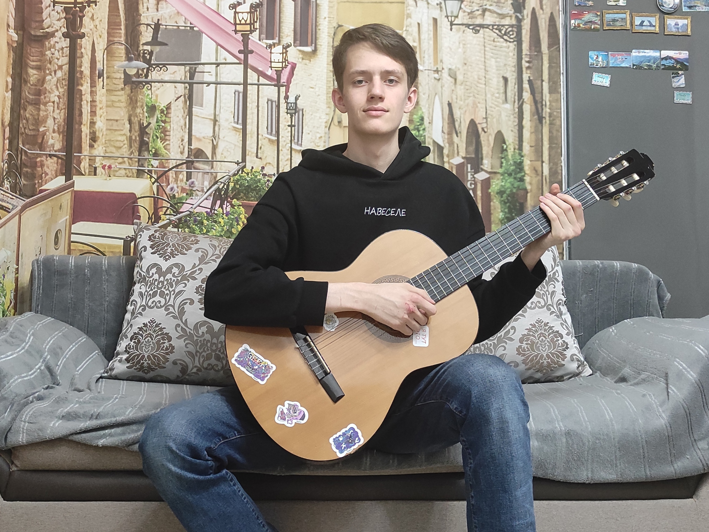
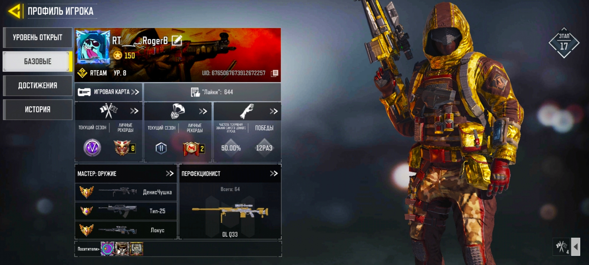

Привет! Я Святослав!
(На фото Бабушка, Я и Мама соответственно)
Привет! Меня зовут Ткаченко Святослав Андреевич. Я родился 29 ноября 2002 года в городе Йошкар-Ола.
На данный момент Я являюсь студентом Поволжского государственного технологического университета.
Это мой первый опыт в создании чего-либо на HTML. Позвольте же мне рассказать о себе немного подробнее)
Немного о себе
Как я написал ранее, я родился в Йошкар-Оле. Однако, по стечению обстоятельств, моя семья перебралась на север, в город Сургут.
Там я жил и ходил в детский сад, пока не настало время поступать в первый класс. По несчастному стечению обстоятельств, мои родители,
незадолго до этого развелись. Моя Мама боялась, что не сможет справится со мной и работой одновременно и предприняла решение о нашем
переезде в Нижневартовск, поскольку там живет моя Бабушка(её Мама).
Так я остался в Нижневартовске и все одиннадцать лет учебы жил там. Однако настало время поступления в ВУЗ.
Я был уверен, что хорошо сдам ЕГЭ и смогу осуществить свою мечту - поступить в Санкт-Петербург. ЕГЭ я сдал не скать чтобы плохо,
однако это точно был не уровень Питера. 4 из 5 заявлений я подал в Северную столицу и ни по одному не прошёл. Последнее заявление
я подал в местный ВУЗ, как раз на этот случай. Однако, я сделал это настолько невнимательно, что сам не заметил, как подал заявление
на платной основе. Все сроки истекли, подать куда-то ещё уже нельзя и единственным вариантом для меня оставалась армия. К счастью,
мне на помощь пришли Бабушка и Папа. Папа нашел более подходящий ВУЗ, а бабушка - деньги на обучение. Таким образом, я оказался спасён
от армии и оказался в Йошкар-Оле вновь.
Мои хобби
Из своих хобби, я могу выделить два основных:
- Игра на гитаре
- Мобильные видеоигры
Гитару я полюбил ещё в утробе. Как мне рассказывала Мама, когда она заканчивала играть на гитаре, я начинал пинаться
(требовал вернуть музыку обратно). К восьми годам мой интерес к гитаре сильно ослаб, и я поступил в музыкальную школу
и закончил её по классу фортепиано. После её окончания, мне досталась гитара моей тёти(в подарок на день рождения).
С того момента я начал активно осваивать гитару, учил аккорды и разные песни: от Кино и Король и Шут, до Металики.
На данный момент, я получил место соло-гитариста в музыкальной группе ФИиВТа, и готовлюсь к выступлению на Студвесне.

(Я и моя первая гитара)
Косаемо моего увлечения мобильными играми, я очень люблю играть в Call of Duty:Mobile. Я начал в неё играть ещё в ноябре
2019 года. За все это время игры, я довольно хорошо научился играть на снайперских винтовках - на одном из сложнейших классов
для освоения(всего убийств 177 тыс., 58 из которых сделаны только на снайперках). Я продолжаю играть и по сей день, из-за текущей
ситуации в мире, игру могут в любой момент заблокировать на территории РФ.

(Не хочу хвастаться, но на фото один из редчайших скинов в игре)